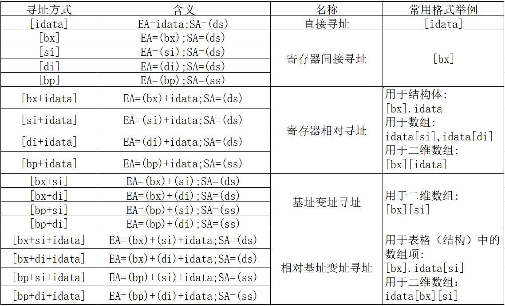
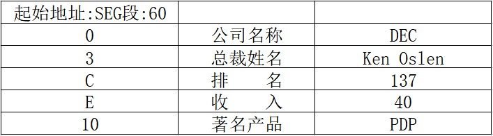

从0开始的汇编语言（八）
前言
从0开始的汇编语言系列，选用的参考书籍是清华大学出版社，王爽老师的《汇编语言第四版》。该系列属于博主的笔记系列，文中会采用一些书中的例子，图片以及思考题供读者阅读，如需详细学习汇编语言可以购入一本，谢谢。
学习之前我们做如下约定（随着学习深入还会出现新的约定）：
- 十六进制数均以H结尾
- 使用8086CPU作为案例
- 我们使用(地址或寄存器名称)表示一个寄存器或一个内存单元的内容，()内地址是且一定是物理地址
- 我们将idata视作常量
- 我们以reg表示一个寄存器包括ax、ah、sp、bp、si、di等，sreg表示一个段寄存器包括ds、ss、cs、es。
话不多说我们马上开始。
数据处理的两个基本问题
这一篇可以算的上是一篇总结性的文章。我们知道，计算机是进行数据处理、运算的机器，那么有两个基本的问题就包含其中：
- 处理的数据在哪里？
- 要处理的数据有多长？
这两个问题，在机器指令中必须给明确或者隐含的说明，要不然是没有办法工作的，所以我们这篇文章就在8086CPU的基础上进行讨论。
bx、si、di、bp
前面三个寄存器我们都已经见过啦，我们来总结一下它们的用法：
- 在8086CPU中只有这四个寄存器可以用在[…]中来进行内存单元的寻址。
- 在[…]中，这4个寄存器可以单个出现，或者只能以这四种组合出现：bx和si、bx和di、bp和si、bp和di。
- 只要在[…]中使用寄存器bp且指令中没有显性的给出段地址，那么段地址就默认在SS中。
机器指令：我的数据在哪里？
绝大部分的机器指令都是进行数据处理的指令，处理大致分为三类：读取、写入、运算。但从机器指令这一层来讲，它并不关心数据的值是多少，而关心指令执行前一刻，它要处理的数据在哪里？在指令执行前，所要处理的数据可以在三个地方：CPU内部、内存、端口。
汇编语言中数据位置的表达
在汇编语言中如何表达数据的位置呢？我们有三个概念来表达数据的位置。
1.立即数（idata）
对于直接包含在机器指令中的数据（执行前在CPU的指令缓冲器中），在汇编语言中成为：立即数（idata），在汇编指令中直接给出，例如：
1 | mov ax,1 |
2.寄存器
指令要处理的数据在寄存器中，在汇编指令中给出相应的寄存器名，例如：
1 | mov ax,bx |
3.段地址（SA）和偏移地址（EA）
指令要处理的数据在内存中，在汇编指令中可以使用[X]的格式给出EA,SA在某个段寄存器中，例如：
1 | mov ax,[0] |
存放段地址的寄存器可以是默认的，1到4条指令的段地址默认在ds中，5到8条指令的段地址默认在ss中，当然存放段地址的寄存器也可以显性给出，就像9到12条指令所做的。
寻址方式
当数据存放在内存中，我们有很多方式给顶这个内存单元的偏移地址，这种定位内存单元的方法一般被称为寻址方式。我们用一张图片来总结一下这些寻址方式。

指令要处理的数据有多长？
8086CPU可以处理两种尺寸的数据，byte和word。所以在机器指令中要指明到底是字操作还是字节操作，我们有如下方式处理：
1.通过寄存器名指明要处理的数据的尺寸，例如：
1 | mov ax,1 |
其中1到4条指令指明了是字操作，5到8条指明了是对字节操作。
2.用操作符 X ptr 指明内存单元的长度，X在汇编指令中可以为word或byte，例如：
1 | mov word ptr ds:[0],1 |
其中1到4条指令指明了是字操作，5到8条指明了是对字节操作。在没有寄存器指明数据尺寸时，使用操作符指明时非常必要的，如果没有指明是无法正常工作的。
3.其他方法
有些指令默认了访问的是字节单元还是字单元，比如push [1000H]就不需要指明访问单元是字单元还是字节单元，push指令只进行字操作。
寻址方式的综合应用
我们通过一个问题来体验一下各种寻址方式的作用。
1982年，DEC公司有一条数据如下：
公司名称：DEC
总裁姓名：Ken Oslen
排 名：137
收 入：40（40亿美元）
著名产品：PDP
这些数据在内存中存放方式如下：

根据图片可以知道，数据被存放在seg段中从偏移地址60H起始的位置，从seg:60+0开始存放了3个字节的公司名称；从seg:60+3开始存放了9个字节的总裁姓名；从seg:60+C开始存放了一个字型数据，排名；从seg:60+E开始存放了一个字型数据，公司的收入；从seg:60+10开始存放了3个字节的著名产品。
直到1988年DEC公司的信息有了如下变化：
- Ken Olsen在富豪榜上上升到了38位。
- DEC的收入增加了70亿美元。
- 该公司的著名产品已变为VAX系列计算机。
我们的任务就是把过时的数据修改掉。
我们直接看code段的关键代码：
1 | mov ax,seg |
为了让大家对这段代码有更好的理解，我们用C语言写一下该程序：
1 |
|
我们可以将两种代码的一些部分对应起来：
1 | mov word ptr [bx+0CH],38 dec.pm=38; |
怎么样是不是很直观，根据对比的结构，我们可以得知8086CPU提供如[bx+si+idata]的寻址方式为结构化数据的处理提供了方便。一个结构化的数据包含了多个数据项，而且数据项的类型又不相同。这个时候我们就可以使用[bx+si+idata]来访问结构体中的数据。用bx定位整个结构体，用idata定位结构体中的某一个数据项，用si定位数组项中的每一个元素。所以汇编语言提供了更为贴切的书写格式如[bx].idata、[bx].idata[si]。
在C语言中我们又可以看到，如dec.cp[i]，dec是一个变量名，指明了结构体变量的地址，cp是结构体中的一个变量，指明了数据项cp的地址，而i用来定位cp中的每一个字符。所以看看dec.cp[i]和[bx].10H[si]是不是很像呢？
div指令
div指令是除法指令，使用div要注意如下事情：
- 除数：有8位和16位，在一个reg或内存单元中。
- 被除数：默认放在AX或者DX和AX中，如果除数是8位，被除数为16位，默认存放在AX中；如果除数为16位，被除数则为32位，在DX和AX中存放，DX存放高16位，AX存放低16位。注意！被除数的位数一定是除数的两倍。
- 结果：如果除数为8位，则AL存储除法操作的商，AH存储除法操作的余数；如果除数为16位，则AX存储除法操作的商，DX存储除法操作的余数。
div指令的格式是这样的：div reg 或 div 内存单元
我们举几个例子来看一下div指令：
div byte ptr ds:[0]
首先，我们根据操作符确定了除数是8位的，所以被除数是16位的，被存放在AX中了，执行后商被存储在AL中，余数被存放在AH中。用符号表达就是 (AL)=(AX)/((ds)×16+0)的商， (AH)=(AX)/((ds)×16+0)的余数。
div word ptr es:[0]
首先，我们还是根据操作符确定了除数是16位的，所以被除数就是32位的，需要AX和DX共同存储，其中DX存储了高16位，AX存储了低16位，执行时DX中的数据要先乘10000H（左移四位）再加上AX中的数据才能组成被除数，例如被除数是8b1d7eecH那么就意味着(DX)=8b1dH,(AX)=7eecH，所以被除数就等于(DX)×10000H+(AX)。用符号表达就是 (AX)=[(DX)×10000H+(AX)]/((es)×16+0)的商， (DX)=[(DX)×10000H+(AX)]/((es)×16+0)的余数。
伪指令dd
前面我们用db和dw定义字节型数据和字型数据，dd是用来定义dword（双字）型数据的，例如：
1 | data segment |
在data段定义了3个数据：
第一个数据为01H,在data:0处，占1个字节；
第一个数据为0001H,在data:1处，占1个字；
第一个数据为00000001H,在data:3处，占2个字。
dup
dup是一个操作符，在汇编语言中和db、dw、dd等一样，也是编译器识别处理的符号。它是和db、dw、dd等数据定义伪指令配合使用的，用来数据的重复。例如：
db 3 dup(0) 就是定义了三个字节，它们的值都是0，相当于db 0,0,0
db 3 dup(1,2,3) 就是定义了九个字节，它们的值是0,1,2,0,1,2,0,1,2，相当于db 0,1,2,0,1,2,0,1,2
可见dup的使用格式如下：
db 重复的次数 dup （重复的字节型数据）
dw 重复的次数 dup （重复的字型数据）
dd 重复的次数 dup （重复的双字型数据）
dup是一个非常实用的操作符，比如要定义一个200个字节大小的栈段，原本你需要使用dw声明100个字型数据，但现在你可以这样：
1 | stack segment |
 wechat
wechat alipay
alipay